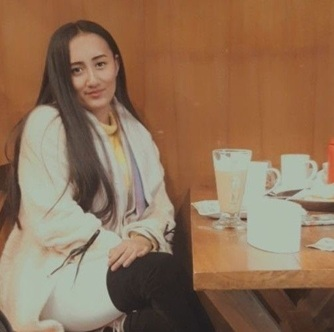
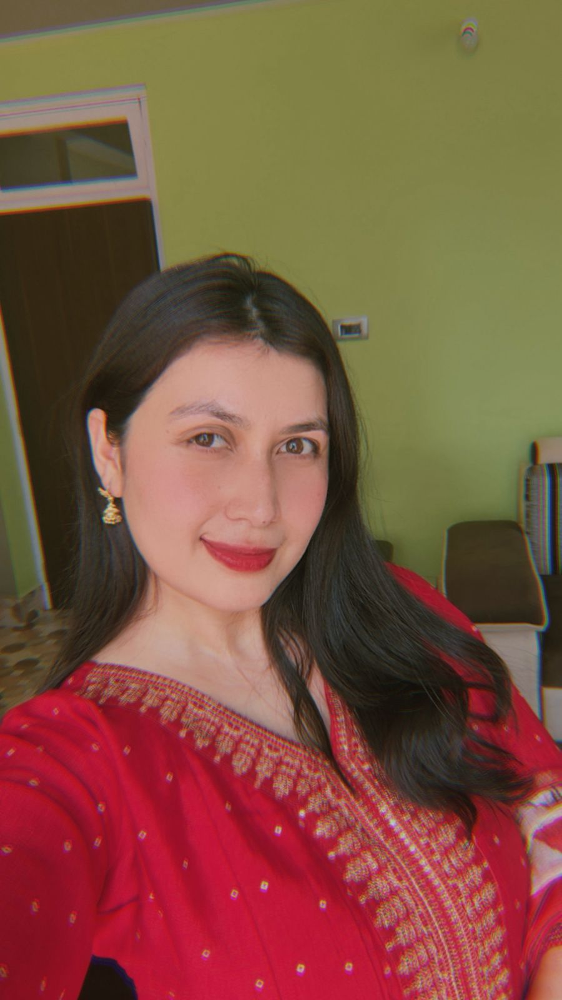

Research
Biomedical Device Fabrication
Our research group is dedicated to developing affordable, rapid, and user-friendly biomedical devices and therapeutic platforms to address pressing challenges in cancer and allied healthcare. By combining core principles of chemistry with modern interdisciplinary strategies, we work toward creating accessible technologies that support improved diagnosis, treatment, and patient care.
Our research spans biosensing, diagnostic device development, smart materials, drug delivery systems, and healthcare-oriented therapeutic applications. The group brings together expertise from chemistry, materials science, biology, health sciences, engineering, and computational science, creating a highly collaborative research environment. We welcome students from applied sciences, basic sciences, health sciences, pharmaceutical sciences, biotechnology, biomedical sciences, and engineering who are interested in contributing to impactful, solution-driven research. Through this work, we aim to translate fundamental scientific advances into practical healthcare innovations with real-world medical and societal value.
Advanced functional materials
Our research on advanced functional materials focuses on the synthesis of heterocyclic-appended porphyrins, terpyridines, metal-organic frameworks (MOFs), and covalent organic frameworks (COFs) for applications in anticancer therapeutics, biological activity studies, and chemical sensing. These materials are particularly explored for the selective detection of volatile organic compounds (VOCs), disease biomarkers, and environmentally relevant analytes. Owing to their tunable electronic, optical, and structural properties, these functional materials also demonstrate potential applications in catalysis, photocatalysis, energy-related systems, imaging, smart diagnostics, and next-generation healthcare technologies.
Colorimetric/electrochmeical VOC sensing
Our laboratory focuses on the development of advanced sensing platforms for the detection of volatile organic compounds (VOCs) and clinically relevant disease biomarkers using both electrochemical and colorimetric approaches. The research includes sensing strategies for biomarkers associated with colorectal cancer, liver cirrhosis, heart failure, tuberculosis, and other critical health conditions. In parallel, the group also works on the detection of contraband substances, hazardous chemicals, and explosive materials for environmental, forensic, and security-related applications. By integrating functional materials, supramolecular chemistry, and smart sensing technologies, the laboratory aims to develop rapid, selective, portable, and cost-effective diagnostic and detection systems for real-world applications.
Software Development through AI & Integration
Our laboratory has partnered with A & I Software Solutions for the development and integration of software platforms, mobile applications, data analytics systems, and statistical tools associated with the biomedical devices and sensing technologies developed in the lab. The collaboration focuses on transforming laboratory-scale innovations into market-ready technologies suitable for publications, patents, translational research, and commercial applications. The group also integrates computational tools such as molecular docking, molecular dynamics simulations, cheminformatics, and predictive modeling with Artificial Intelligence (AI) and data-driven approaches to accelerate material discovery, therapeutic design, diagnostics, and smart healthcare solutions.
Projects and Tools
Exposure RGB Mapper
A web-based tool for comparing before and after exposure images, selecting crop regions, measuring RGB shifts, and exporting structured sensor results.
Phone-assisted sensor analysis workflow
A lightweight image capture and analysis approach designed to make laboratory sensing experiments easier to quantify outside specialized imaging setups.
Add your latest project here
Replace this block with your most recent funded work, student thesis, publication, prototype, or active collaboration.
Completed & Ongoing Funded Projects
1. Fabrication of Colorimetric Testing Kit for early detection of Colorectal Cancer using Faecal Headspace Volatile Organic Compounds (FH-VOCs)
Funding Agency: Directorate of Biotechnology (DBT), Government of India
Amount: 46.04 lakhs
Status: Phase-I Ongoing
Proposal ID: BT/PR49810/MED/32/936/2023
Role: PI
University: SRM University
2. Synthesis, characterization and application of new terpyridine appended porphyrin for the sensing of Cd(II) at ppt level
Funding Agency: SRM University Sikkim, Seed Grant
Amount: 8 lakhs
Status: Completed
Proposal ID: SRMUS/SG/2018-1
Role: PI
University: SRM University
3. Harnessing Cannabis Sativa from the Himalayan Region: A Solution to Antimicrobial Resistance, Analgesic Dependency Specially for Cancer Patients, Autism and Anxiety Disorders
Funding Agency: SRM University Sikkim, Seed Grant
Amount: 10 lakhs
Status: Ongoing
Proposal ID: SRMUS/SG/2025-1
Role: PI
University: SRM University
Publications
Selected journal publications and research outputs from the laboratory.
1. Fabrication of Porphyrin Based Colorimetric Sensor for the Detection of Liver Cirrhosis Biomarker
Authors: Anup Gurung, Rushmika Gurung, Priyanka Kumari, Thinley Bhutia, Promodh Poudyal, Gyaltsen Pradhan
Journal: ChemRxiv, 2023
DOI: 10.26434/chemrxiv-2023-144cn
2. Assessing the effectiveness of different chiral and achiral phosphoric acids in presence of thiourea co-catalyst in co-operative organocatalytic stereoselective glycosylation reactions
Authors: Govind Pratap Singh, Raja Abirami and Anup Gurung
Journal: Indian Journal of Chemistry-B, 2020, Vol. 59B, Pg. 1206-1215
3. One Pot Synthesis of Formyl benzyl terpyridine: A simplified synthesis
Authors: Anup Gurung and Sanjay Dahal
Journal: Oriental Journal of Chemistry, 2016, Vol. 32, No. 2, Pg. 1261-1264
4. Detection of cobalt(II) and copper(II) selectively using versatile fluorochemosensors in parts per trillion level in aqueous solution
Authors: Anup Gurung, Antara Sharma, Sangay Bhutia, Sanjay Dahal
Journal: The Pharmaceutical and Chemical Journal, 2016, 3(1):149-153
5. Breath Analysis in Tuberculosis Disease Recognition in New Millennium
Authors: Ranabir Pal, Anup Gurung, Sangay Doma Bhutia, Antara Sharma, Sanjay Dahal
Journal: Journal of Microbiology and Biotechnology, Vol. 2, No. 3, 2013
6. Colorimetric Sensor: The New Horizon In Health & Disease
Authors: Ranabir Pal, Anup Gurung, Sanjay Dahal
Journal: Asian Journal of Biochemical and Pharmaceutical Research, Issue 2, Vol. 3, 2013
7. Spotting biomarkers of pulmonary tuberculosis in human exhaled breath using porphyrin based sensor array
Authors: Ranabir Pal, Anup Gurung, Sangay Doma Bhutia, Antara Sharma, Sanjay Dahal
Journal: International Journal of Bioassays, Vol. 2, No. 07, 2013
8. Exploring Modern Developments in Diverse 2D Photocatalysts for Water Oxidation
Authors: P. P. Bag, D. K. Thapa, G. P. Singh, A. Maity and A. Gurung
Journal: J. Porous Mater., 2023
People
Research Scholars and Students

Ms. Nikita Chettri
Ms. Nikita Chettri is the first research scholar of the laboratory. Her research focuses on the development of low-cost and easy-to-use diagnostic systems for the early detection of oral and colorectal cancer. She has contributed to the development of an Oral Cancer Testing Kit and is associated with a granted patent in this area.

Ms. Priyanka Basnett
Ms. Priyanka Basnett is a DST INSPIRE Fellow, PhD scholar, and first-rank holder of the Department. Her research focuses on the synthesis of anti-cancer drug candidates and the development of colorimetric and electrochemical approaches for tuberculosis screening, with the aim of fabricating affordable diagnostic devices for rapid disease detection.
Mr. Israil Ali
Mr. Israil Ali is a recently joined research scholar working on the development of electrochemical thin-film sensor systems for the early prediction and detection of heart attack-associated biomarkers. His research also involves the synthesis of metal phthalocyanine-based materials for thin-film fabrication, aiming to enhance the sensitivity and performance of next-generation electrochemical diagnostic devices.
MSc Major Projects
Gallery
Laboratory photographs, event snapshots, student activities, and research highlights.